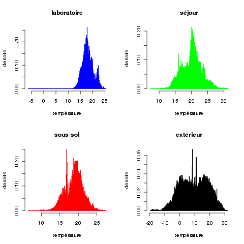

Toutes les manipulations se feront avec R, sous Linux. (Sachez néanmoins que R fonctionne sous Windows et sous MacOS.)
Les quatre fichiers de données sont disponibles aux urls suivantes :
Vous chargez les 4 fichiers de données, chacun dans un data frame distinct. Vous donnez des noms aux colonnes de manières à ce que des colonnes contenant la même information portent le même nom dans différents data frames, et inversement.
Construisez un seul data frame à partir des 4 précédents (avec la fonction merge()).
Quand vous l'avez fait, effacez les 4 data frames qui sont
désormais inutiles (fonction remove()).
Cette analyse préliminaire consiste à jeter un coup d'œil rapide
à ses données, en utilisant des outils de statistique descriptive
élémentaires, et des outils de visualisation de données, eux-aussi
élémentaires.
L'objectif de cette analyse est de connaître les données que l'on va
analyser par la suite de manière détaillée.
Afin d'avoir une vision synthétique des 4 séries de températures, on va construire un graphique ayant leurs 4 histogrammes dans la même fenêtre :
On vous indique ci-dessous le principe pour afficher plusieurs graphiques dans une même fenêtre :
op <- par(mfrow=c(nombre-de-lignes, nombre-de-colonnes))
par(op)pour ré-initaliser le mode graphique.
À faire :
L'histogramme réalisé ci-dessus montre une distribution des valeurs
qui a l'air à peu près normale. On veut vérifier cette hypothèse à
l'aide d'un test statistique.
Quel test statistique convient-il de faire ?
Ce test n'est pas directement disponible dans R, mais il l'est dans
l'un des nombreux paquets R qui sont disponibles sur le CRAN. Nous
sommes ici face à un problème très général dans R : la fonction
que l'on cherche n'est pas directement dans R, mais elle est
disponible dans un paquet R que l'on peut installer. Il est donc
important de savoir :
Nous reprenons ces différents poins :
help ("lilliefors")
ce qui nous donne :
No documentation for 'lilliefors' in specified packages and libraries:
you could try 'help.search("lilliefors")'
Donc, en résumé, R n'a pas ce test en stock, mais nous invite à
taper une autre commande pour qu'il poursuive ses recherches. On
tape donc cette commande :
help.searchlillieforset cette fois, on a une réponse positive. On nous indique une fonction et le paquet dans laquelle elle se trouve.
library(nom-du-paquet)Deux possibilités :
install.packages (nom-du-paquet-entre-guillemets, lib=".")R vous demande où, sur Internet, aller chercher le paquet ; faites votre choix. et voilà. Vous pouvez maintenant lancer R et taper la commande library(nom-du-paquet, lib.loc = ".") avec le nom de ce nouveau paquet. Désormais, ce paquet est installé sur votre machine ; pour l'utiliser, il suffit de taper une commande library(...).
Remplacer les NAs isolés (i.e., 1, 2, ... quelques NAs qui se suivent au milieu de valeurs connues) par une valeur probable (obtenue par interpolation linéaire).
Inspectez le jeu de données pour détecter les éventuels doublons, c'est-à-dire, des données différentes qui correspondent au même instant.
Effectuer un lissage des données (avec la fonction smooth()).